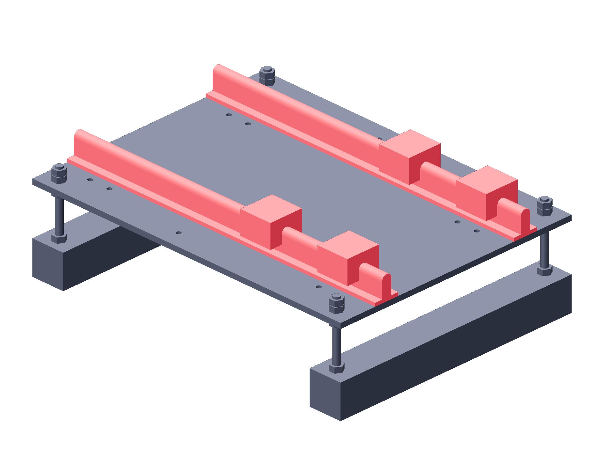

Observation / two stages143 / 179
Align the manual camera rails
Two 400 mm SBR12 rails guide each stage. The carriage moves 200 mm manually; camera and lens always move together.
AddPer stage: 2 SBR12 × 400 mm · 4 blocks · 16 M3 × 20 / 32 washers / 16 locking nuts
Tools / setupCaliper · straightedge · small hex keys

- Set the rail centers 180 mm apart and keep one rail straight to the plate edge.
- Transfer the received rail foot hole phase into the fixed plate and start all through-bolts.
- Slide two blocks onto each rail with their plate holes facing up.
- Seat the datum rail; leave the second rail free to align under the carriage.
Ready when
The carriage hole pattern matches the four blocks without forcing the rail spacing. A mismatched pattern or binding block fails the guide fit. Re-align the second rail before locking its feet.